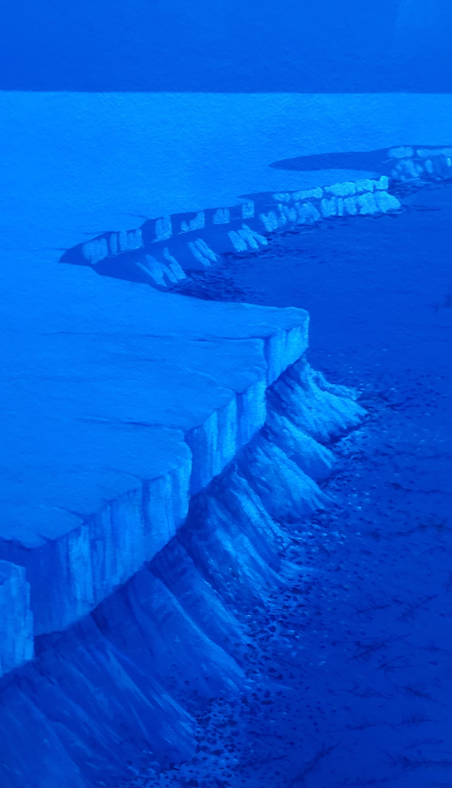
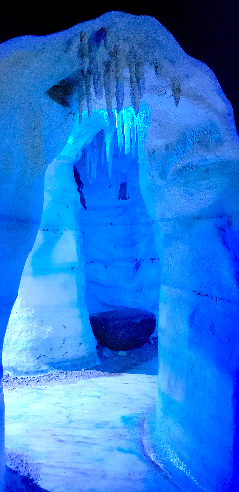

End Ordovician Mass Extinction Event
Extinction occurs when all individuals of a species are lost. Extinction occurs constantly over geologic time. The constant extinction rate is called the background extinction rate. There are times when extinctions increase dramatically. These are called mass extinctions. There are five major mass extinction events recognized in the fossil record. The end Ordovician extinction event is one of these five major events.
Over 85% of all species living at the end of the Ordovician went extinct during this mass extinction event, making the End Ordovician extinction event the second largest major extinction event. Major groups of trilobites and brachiopods were lost. Paleontologists and geologists are studying what caused this event.
Evidence collected so far points to a number of complicated environmental changes that caused this extinction event.
First mountain building events on the East coast of North America and elsewhere caused increases in exposed rock and their weathering. This produced nutrients running off from the newly formed mountains into the shallow seas surrounding them. The increase in nutrients produced a fertile environment for shallow marine animals and plants to grow and thrive. Many endemic faunas evolved and thrived around the globe creating a high level of biodiversity. As these organisms grew they used carbon to build their shells. This withdrew carbon from the oceans and atmosphere and lowered carbon dioxide levels across the globe. As CO2 levels dropped, so did temperatures causing icebox conditions to form. Large continental glaciers formed covering the landmasses. The removal of water from the seas to form the ice in these glaciers caused sea levels to drop. The colder seas and lower sea levels reduced the space for the tropical faunas of North America to live causing many to go extinct.
Cold water faunas expanded across the globe with the advance of the ice sheets. These cold water faunas were not as diverse and were not isolated but widespread form a cosmopolitan fauna. This continued to keep biodiversity lower. As the Earth warmed again over a period of about one million years, carbon levels began to rise again and the glacier retreated and melted, and the oceans warmed again. This warming caused a second pulse of extinction focused on the cold water faunas. Thus the End Ordovician extinction event had two pulses of extinction over about a one to two million year period. During the Silurian the cosmopolitan fauna that dominated the very end of the Ordovician began to diversify and endemic faunas started to flourish in the warm shallow seas across Earth’s continents and biodiversity returned to previous levels by the end of the Early Silurian.
